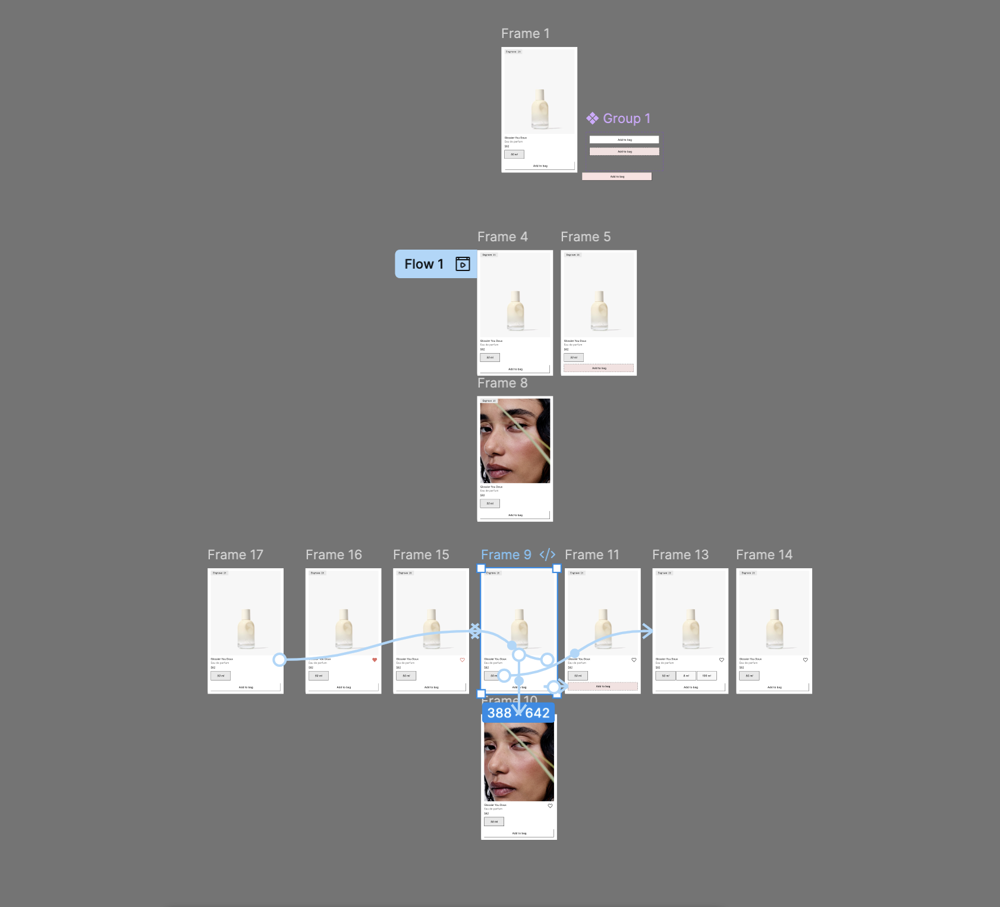
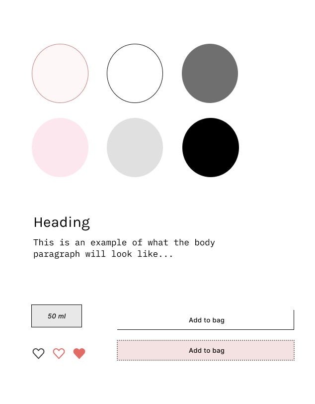

The Overview
On Glossier’s fragrance collection page, customers should be able to scan quickly, explore variants, and feel confident about actions like saving or adding a product. The challenge is doing this while keeping the interface minimal and consistent with Glossier’s soft aesthetic.
This microinteraction concept enhances one product card with hover and click feedback: a raised card state for discoverability, an image swap to provide additional context, a size selector that reveals options and confirms a chosen size, and a favorites toggle that communicates saved state through both visuals and accessibility attributes.
Context and Challenge
Background
Glossier’s fragrance collection is designed to feel clean, modern, and easy to browse. Product cards are one of the first things users interact with when scrolling through a product website, so they need to clearly convey what is clickable and what actions are available.
This project was completed as part of IDM 241, a 10-week interaction design course focused on microinteractions and class feedback. The goal of the assignment was to design and build components that use motion and state changes to improve usability. The project focused on one product card rather than a full website and was completed individually within the course timeline. The final iteration was completed in parts starting with Alpha, Beta, then Final. Each iteration included further building of the product card and improvements to the microinteractions and UI design.
The Problem
Many product cards feel static and do not clearly show how users can interact with them. Actions like hovering for more information, selecting a size, or favoriting an item can be easy to miss or feel unclear if there is no feedback.
The challenge was to improve clarity and usability using only subtle interactions, without adding extra UI elements or overwhelming the design. Any interaction added, needed to feel intentional and fit naturally within Glossier’s minimal style.
Goals & Objectives
- Make interactive elements easy to recognize through hover and motion.
- Give clear visual feedback when a user hovers and selects the product sizes or favorites button.
- Allow users to preview product details, such as different imagery and size options with hover, without leaving the product card.
- Keep all interactions simple, lightweight, and consistent with Glossier’s branding.
This project was an individual project.
Process and Insight
Target Audience
The primary audience for this project was Glossier’s typical online shopper, the demographic being usually women ages 16–30. They are users who value a clean interface, subtle design, and a smooth browsing experience. These users are likely scanning quickly, comparing products, and making decisions based on small details. Because of this, the interactions needed to be noticeable enough to guide the user, but soft enough to avoid feeling distracting or overwhelming.
User Journey
- User scrolls through the fragrance collection page.
- User notices a product card and hovers over it.
- The card lifts slightly, signaling it is interactive.
- User hovers over the image and sees a lifestyle photo preview.
- User moves to the size button and hovers to reveal more size options.
- User selects a size and sees a brief confirmation animation.
- User clicks the heart icon to favorite the product.
- User feels confident their actions were successful due to visual feedback.
Early Design Exploration
Instead of starting with formal sketches, early exploration was done by analyzing Glossier’s existing website and other similarly branded e-commerce sites. These new design ideas were added during the Beta Phase of the project and included new hover states to the product card and add to bag button.


Alpha, Beta, and Final Iterations
Alpha Phase
The alpha phase focused on planning and defining the interactions before writing any code. An animated GIF was used to show the intended behavior of the product card, along with a written breakdown of the triggers, rules, and feedback for each interaction. This helped map out how users would interact with the card and what visual responses would occur.
The alpha build translated this concept into code. The initial product card layout was built using HTML and CSS, and hover interactions were implemented based on the alpha planning.
Beta Phase
During the beta phase, existing interactions were reviewed and adjusted based on usability and clarity. Changes were made to improve discoverability and feedback, such as updating the hover state of the “Add to Bag” button and adding a hover interaction to the entire product card to create a subtle lift effect.
These updates were first explored visually in Figma. A short prototype GIF demonstrated the revised interactions, which made it easier to evaluate timing and motion before coding. For the beta build, the changes were implemented in code to match the Figma example as closely as possible.
Final Phase
The final phase focused on adding more advanced, state-based interactions. A favorites button was introduced with both hover and click states to clearly communicate saved and unsaved states. The product size buttons were also enhanced with hover and click interactions, allowing users to reveal additional options and receive visual confirmation when a size was selected.
As with earlier phases, the final interactions were first planned visually and then coded into the final build.
Development and Refinement
CSS was used to handle most hover interactions, transitions, and animations, while JavaScript controlled state-based actions like the favorites toggle and size selection.
Final Build
The final product is a functional product card that demonstrates how microinteractions can improve clarity and confidence during browsing. Each interaction supports usability while maintaining a clean, minimal look.
The Solution
The final solution is a fully interactive Glossier-inspired fragrance product card that uses microinteractions to improve clarity, feedback, and exploration while keeping the design minimal.
The product card responds to hover by slightly lifting and adding a soft shadow, helping users recognize it as an interactive element. The media area introduces a hover-based image transition, allowing users to preview the product in context.
The size selection feature stays compact by default and expands on hover. Clicking a size updates the primary button text and briefly confirms the selection before returning to its neutral state. A favorites button supports saving products through clear hover and click states.
The Results
This project successfully met its goal of using microinteractions to make a product card feel more clear and responsive without adding unnecessary complexity. The final build communicates interactive elements through subtle hover and click feedback.
The biggest takeaway from this project was learning how small design changes can have a strong impact on usability. If continued, future improvements could focus on accessibility features and expanding feedback for actions like adding an item to the cart.